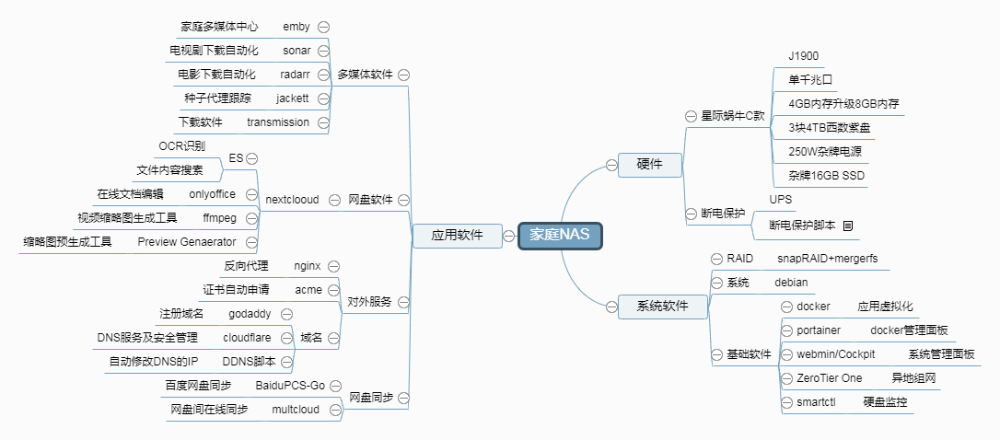

前言
编写本篇文章的主要是对自己折腾NAS的一个学习的记录和总结，以及在折腾的过程中，发现能搜索到的大部分文章都没有具体的操作过程，像我这种很懒得人就想照着文档做的机会都没有，还得各种花式翻资料。所以在折腾的过程中就蒙生了写一个能照着做的文档，即方总结自己，也希望能帮到别人。
需求分析
折腾这个其实是挺机缘巧合的一件事，逛张大妈家的时候，看到了一篇推蜗牛星际的文章，一套加起来还不到300，对比下其他的NAS配件，光是机箱也差不多这个价了吧，某宝搜了一下，就入手了。所以买的时候是没有任何对NAS的需求，只是一时兴起，加上确实便宜。并且稍微研究了下几款机箱，不打算花更多钱的情况下， 也就不考虑软路由加虚拟机了，就入手了C款，单网卡的。
折腾完了之后想想，其实一般人用家庭NAS的需求并不会太多，主要应该就：
1、私密文件存储，如照片啊之类（还有大姐姐）；
2、离线下载，免费资源下载（大姐姐下载） ；
3、多媒体中心，电影、剧集整理及播放；
4、其他，图片服务器、多网盘同步、PT等。
成本核算
机箱：蜗牛星际C款300
硬盘：3块4T硬盘1800
断电保护：UPS电源200
电费：现在功率40W左右，每年200元
一年成本在2500样子，不算维护逐年加200，算5年就是：3300元。
当然，如果你说用不了5年，嘿嘿，入了NAS的坑，还想出去？数据都不要了哈，那你就只能更新设备喽，又是一大笔。
3300元用5年，看着挺核算的是吧。但是如果只有存文件的和下载的需求，百度网盘就能满足你。
百度超级网盘是260块一年，除了你的隐私不能保证外，都挺好的。3300元，也已经够百度超级网盘买10多年了得超级会员了。仔细考虑自己组NAS的需求，千万别拍脑袋就买了。
自己折腾是比较费事的，还得算上后期维护成本。所以推荐非技术侧用户直接买成品NAS，并且成品NAS的耗电还会更低，使用寿命也比自组的更长。
整体结构
